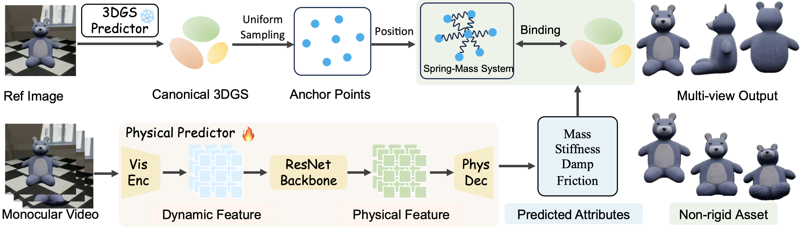
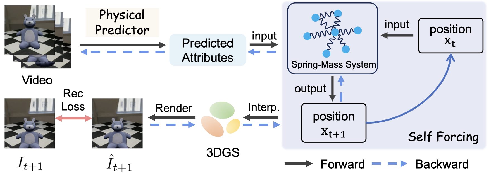
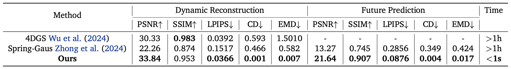
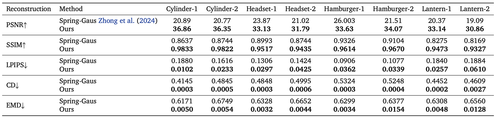
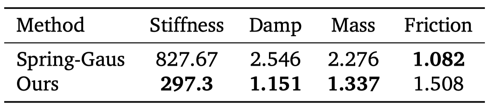

Abstract
Reconstructing non-rigid objects with physical plausibility remains challenging due to expensive per-scene optimization and the lack of physical supervision. ReconPhys is a feedforward framework that jointly learns physical attribute estimation and 3D Gaussian Splatting reconstruction from a single monocular video. A dual-branch architecture with a differentiable simulation-rendering loop enables self-supervised learning without ground-truth physics labels. On a large-scale synthetic benchmark, ReconPhys reaches 21.64 PSNR in future prediction versus 13.27 from optimization baselines, and reduces Chamfer Distance from 0.349 to 0.004 while running in under one second.
Contributions
- A first-of-its-kind feedforward framework for jointly recovering deformable object appearance, geometry, and physical attributes from monocular videos.
- A dual-branch architecture with self-supervised physics learning, plus an automated synthesis pipeline for large-scale deformable object data.
- State-of-the-art performance on cross-object generalization and future prediction, with orders-of-magnitude faster inference than per-scene optimization methods.
Method
ReconPhys combines a frozen 3DGS predictor and a learnable physics predictor. The 3DGS branch outputs canonical Gaussian primitives, while the physics branch estimates mass, stiffness, damping, and friction from video dynamics. A differentiable spring-mass simulator drives anchor motion, and anchor-to-Gaussian interpolation updates Gaussian centers over time.
Training uses a fully differentiable simulation-rendering loop with self-forcing. Reconstruction loss from rendered frames propagates through the simulator to optimize physical attributes, enabling physically meaningful predictions without explicit physics labels.


Synthetic Data Pipeline
The training data is generated from Objaverse-XL assets with semantic filtering, 3DGS reconstruction, consistent anchor sampling, and physically parameterized spring-mass simulation. The final dataset includes 496 objects with dynamic 30-frame monocular videos and associated physical parameters.
Experiments
Cross-Object Generalization
We evaluate the model's generalization capability on unseen geometries. Our method consistently outperforms baselines on synthesized objects, achieving superior fidelity in both dynamic reconstruction and future prediction.

Real-world Non-rigid Assets
We validate practical applicability on real-world non-rigid assets. Our model faithfully captures complex, physics-consistent deformations without per-scene optimization.
Physical Disentanglement
Our method disentangles physical attributes from geometric structure, accurately distinguishing between varying physical states assigned to identical underlying geometry, while maintaining high reconstruction fidelity.


Application in Robot Non-rigid Object Manipulation
This methodology demonstrates the applicability of video-based non-rigid object reconstruction to robotic deformable object manipulation. The acquired high-fidelity digital assets are tailored for photorealistic physical simulation in virtual environments like PhysTwin.
More Interactive Manipulation Demos
Additional demonstrations of interactive manipulation on diverse deformable objects.
More Synthetic Dataset Results
More free-fall dynamic trajectories sampled from our synthesized dataset.
Citation
If you find this work useful, please cite:
@article{wang2026reconphys,
title = {ReconPhys: Reconstruct Appearance and Physical Attributes from Single Video},
author = {Wang, Boyuan and Wang, Xiaofeng and Li, Yongkang and Zhu, Zheng and Chang, Yifan and Ye, Angen and Zhao, Guosheng and Ni, Chaojun and Huang, Guan and Ren, Yijie and Duan, Yueqi and Wang, Xingang},
journal = {arXiv preprint arXiv:2604.07882},
year = {2026}
}